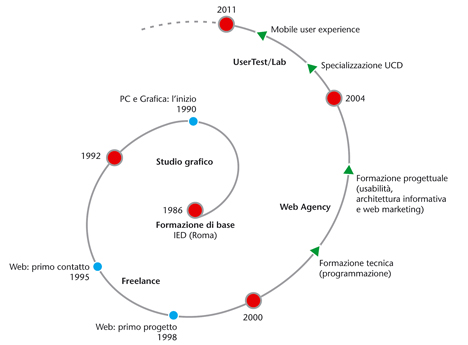

Stefano Dominici inizia come grafico editoriale nel 1988 e percorre una carriera professionale che, a partire dalla progettazione grafica fino allo sviluppo di progetti editoriali complessi, lo porterà a incontrare il web nel 1998.
Nel 2000 inizia un percorso formativo sul web design e l’usabilità che culminerà nel 2004 con il master in usability a cura del Nielsen Norman Group di Jakob Nielsen e proseguito, negli anni successivi, con una specializzazione sugli strumenti dello user-centred design, sempre con corsi a cura del NNG. Attualmente svolge, oltre l’attività con usertest/lab, consulenze per lo sviluppo di progetti web. Come relatore ha partecipato a tre edizioni dello IA Summit italiano (2007/2009/2010), a Web Senza Barriere 2008, a Better Software 2010 e a SMAU 2010 (presentazioni disponibili su Slideshare).
È iscritto all’UPA - Usability Professionals' Association e all'AIAP - Associazione Italiana Progettazione per la Comunicazione Visiva.
Percorso di formazione progettuale e specializzazione

Visual Design for Mobile Devices & Tablets
Kara McCain - Nielsen Norman Group Londra, 2011
Mobile Design: Designing Tapworthy Mobile Apps
Josh Clark - UIE User Interface Engineering Web seminar, 2011
Designing for Mobile Devices
Raluca Budiu - Nielsen Norman Group Berlino, 2009
Agile Development and Usability
Chris Nodder - Nielsen Norman Group Amsterdam, 2008
Interviewing and Survey Techniques
John Morkes (Expero Inc.) - Nielsen Norman Group Amsterdam, 2008
Understanding Users In Context
Susan Dray - CHI 2008 Firenze, 2008
Building Robust Personas in 30 Days or Less
Jared Spool - UIE User Interface Engineering Web seminar, 2007
Real World Insights: Ethnographic Field Research
Christian Roher (eBay) - Nielsen Norman Group Barcellona, 2007
Making Personas Work for Your Site
Steve Mulder - UIE User Interface Engineering Web seminar, 2007
Field Studies: The Ultimate Tool in Your Usability Toolbox
Kate Gomoll - UIE User Interface Engineering Web seminar, 2007
The Persona Lifecycle: Creating e Communicating User Personas
Getting from User Data to Design Sviluppo e utilizzo dei personaggi nello user-centred design John Pruitt e Tamara Adlin - Nielsen Norman Group Londra, 2006
Comparative Usability Evaluation
Gribbons/Dumas (Design and Usability Center - Bentley College) Milano, 2005
Best Practices in Content Management
Architettura informativa e gestione dei contenuti Gerry McGovern - Technology Transfer Roma, 2004
Usability in Practice
Jakob Nielsen - Nielsen Norman Group Londra, 2004
Per maggiori dettagli: Curriculum Vitae (PDF 30Kb)